There are two ways to install plugin.
After you have done any of the above, go to Plugins and find the name of the plugin and click Activate. CM creates the following tables in your wordpress database:
and the following rows in the table wp_options if you're using version 0.1-0.3:
For later versions then 0.3 the settings is saved in an array. The following row is created in wp_options table:
CM has its own menu in the admin which appears at the bottom of the menu column.
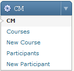
In settings you can see which version you have of CM and determine if admin will get an email when a new registration is received. It is also here that you uninstall the CM from Wordpress, which clears the tables from the database and the settings stored in the wp_options.
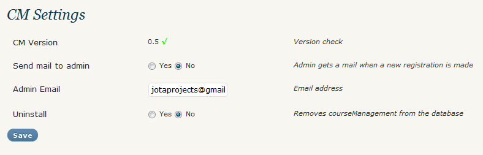
The menu option Courses gives you an overview of the courses you have added.
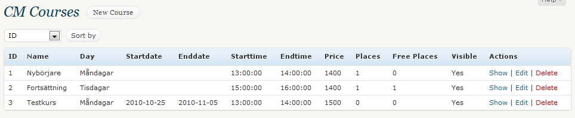
You can add the course via the CM-menu by clicking on the New Course or click the New Course in the course overview.
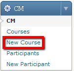
On the New Course, enter the information you want to add. Here you can choose if the course should be available or not, select Yes or No at Visible.
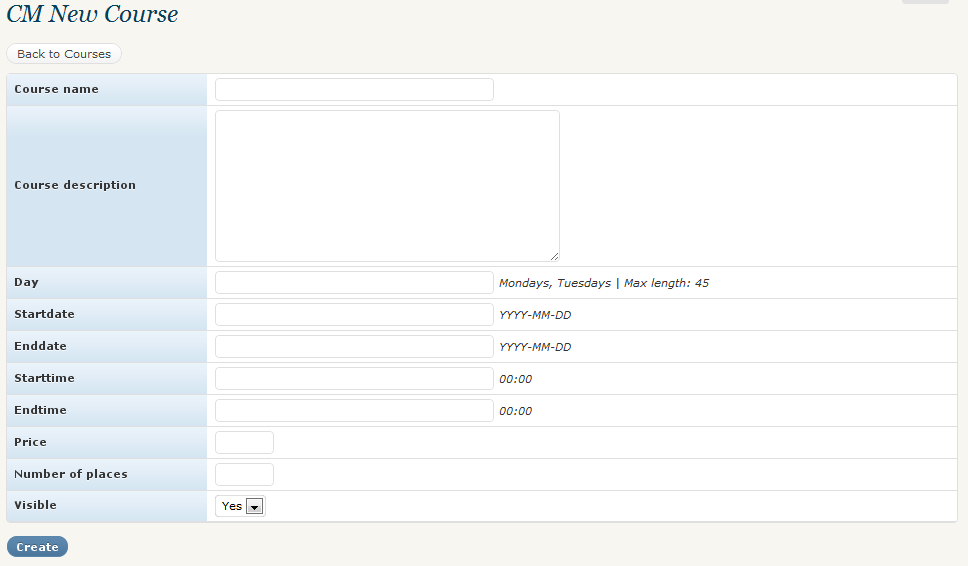
When you choose to view course, you get a small preview of the chosen course and you can see which participants have registered.
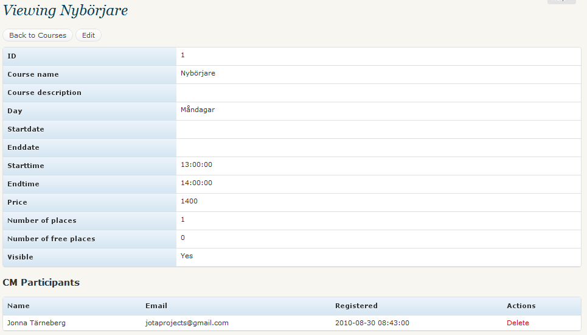
It is also where you delete a participant from a course if they no longer wish to participate in the course.
Here's where you edit the selected course if any information needs to be updated or if something is wrong.
To remove a course, click the Remove link. You'll get a dialog asking if you really want to delete the course. Click OK to delete the course entirely, or Cancel to go back.
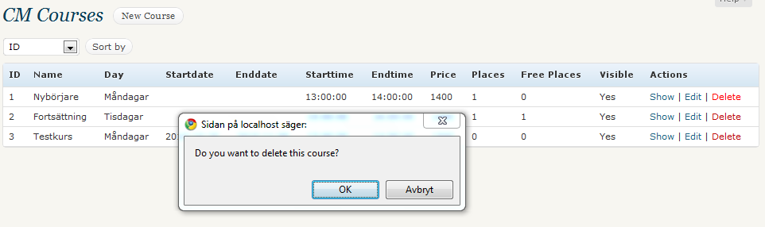
To show the courses on your website, you first create a new page in wordpress. Then in the editor, type in <!--CMOVERVIEW--> in the HTMLview where you want to show the course overview.
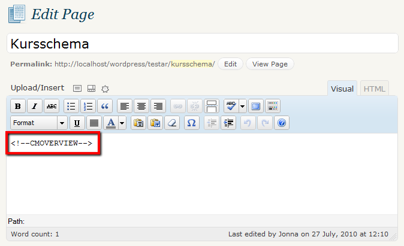
This is later replaced with the course overview when you look at your website. The style varies depending on how you have set your style sheet.
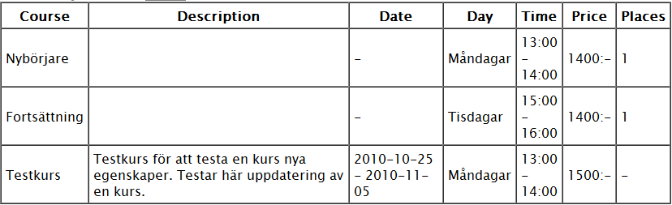
To show the registration form, create a new page or edit an existing one. In the editor, type in <!--CMFORM--> in HTMLview where you want to show the registration form.
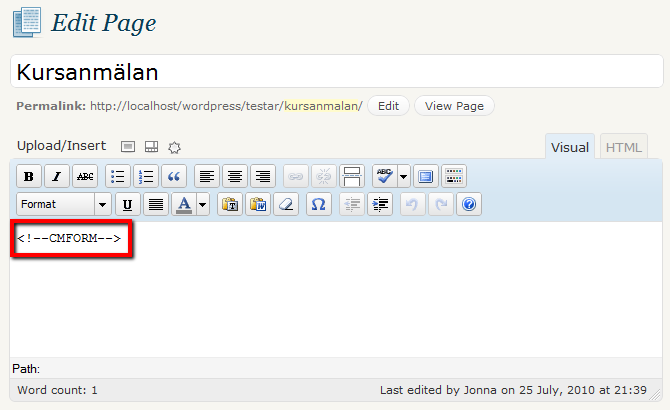
Select to preview the page and you will see that the form appears. The style varies depending on how you have set your style sheet.
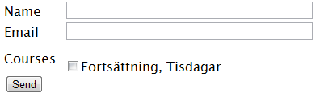
For the CAPTCHA to be available, you must have the plugin 'Really Simple Captcha'. Download it here http://wordpress.org/extend/plugins/really-simple-captcha/, install and activate it. Then you get a CAPTCHA image and a text field on the registration form.
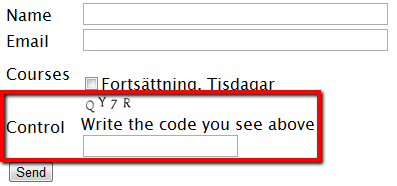
Once you've got a few participants you can view them under Participants in the CM menu. From here you can then view, edit and delete a participant.
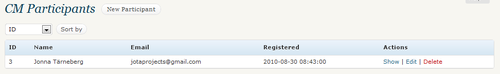
As of version 0.3 of CM you have the opportunity to add new participants through the admin. Either click on the link in a overview of participants or in the admin menu, New Participant.
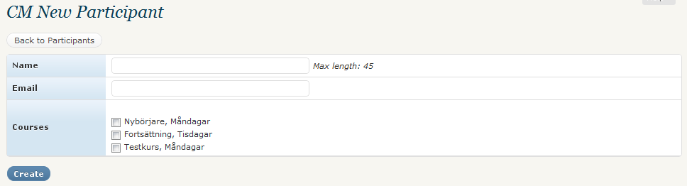
A simple overview of the selected participant. You can see which courses the participant has registered for, name and e-mail.
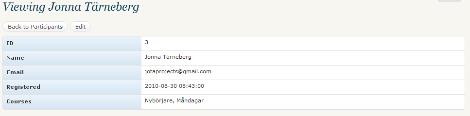
Edit by clicking the Edit link at the desired participant. Then you can edit the name, email, registration date and amend if the participant does not wish to participate in one of courses and vice versa.

Click the Remove link to remove a participant entirely. You get a dialog box asking you to confirm if you want to remove the participant or not. Click OK to delete or Cancel to go back.
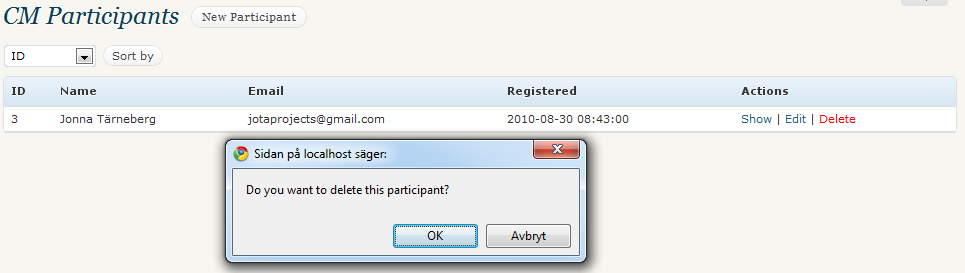
Under view course, you can only remove participants from the course if he does not wish to participate further. This does not delete the actual participant, but only registration to the course. To remove a participant fully read the above paragraph.
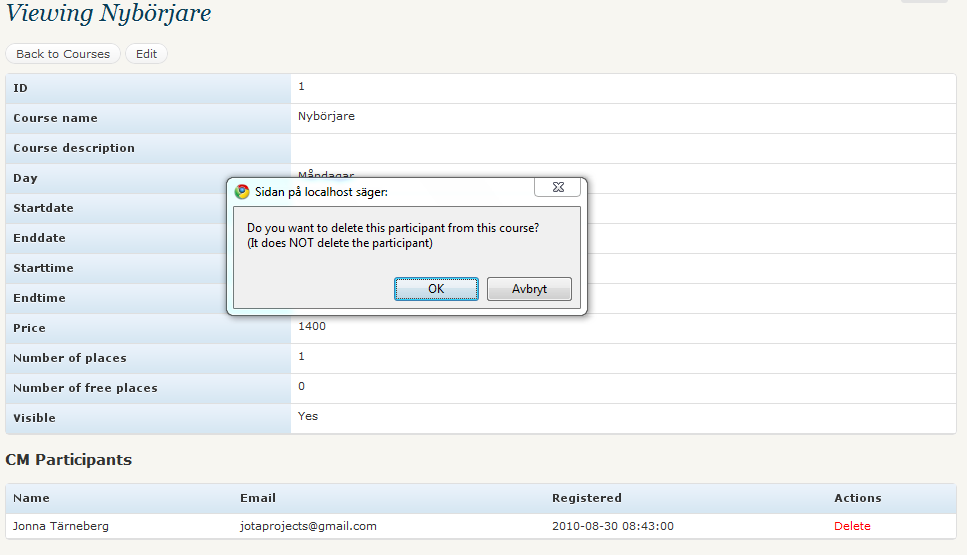
If you want to style the course overview and registrationform on a wppage, you can use the following classes:
For example:
I added the following css to the active themes cssfile (I used the classic theme)
.cm_tbl_regform {
width: 100%;
font-size: 11px;
margin: 20px 0;
}
The result can you see in the below image:
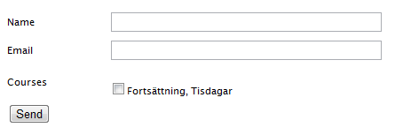
And to style the course overview I added:
.cm_tbl_courseoverview {
width: 100%;
font-size: 12px;
margin: 20px 0;
border: 1px solid #ccc;
}
.cm_tbl_courseoverview thead {
text-align: left;
background: #999;
}
.cm_tbl_courseoverview td {
border: 1px solid #ccc;
The result:
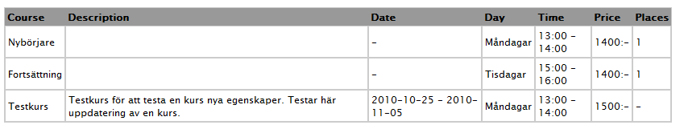
When you wish to uninstall the whole CM, go to the Settings in the CM menu and choose Yes by Uninstall and then click Save. This will remove tables and delete settings. NOTE: This clears everything from courses to participants.
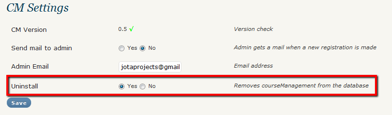
Then deactivate it in the 'Plugins' and then select Delete to delete the folder and files with the CM.
CM is translated into the following languages: